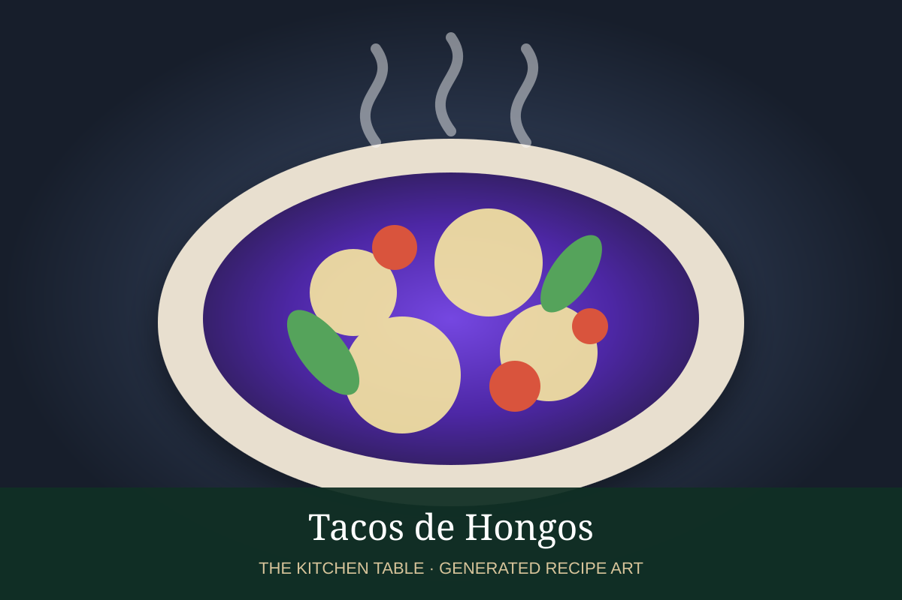

← Back to all recipes
MUSHROOM · MEXICAN
Tacos de Hongos
High-heat sautéed mushrooms with garlic, guajillo, epazote, lime, and avocado in warm tortillas.
30 minMakes 8 tacos

Photo: Infobae
Ingredients
- 1 1/2 lb mixed mushrooms, sliced
- 2 tbsp olive oil
- 3 garlic cloves, sliced
- 1 guajillo chile, toasted and sliced
- 1 tbsp chopped epazote
- Juice of 1 lime
- 8 corn tortillas
- Avocado or salsa de aguacate
- Salt and pepper
Preparation
- Dry the mushrooms well and heat a wide skillet until hot.
- Cook mushrooms in batches with oil so they brown rather than steam.
- Add garlic and guajillo once the mushrooms are browned and most moisture has evaporated.
- Stir in epazote, lime, salt, and pepper.
- Serve in warm tortillas with avocado or salsa.